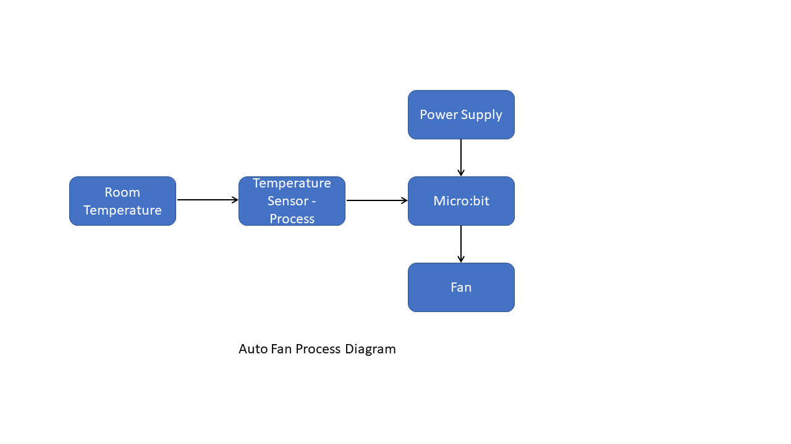
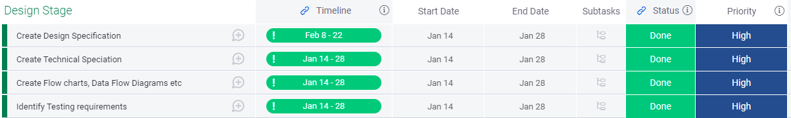
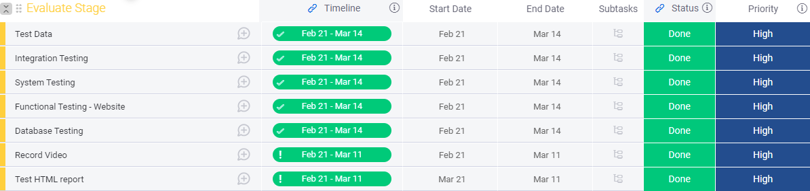
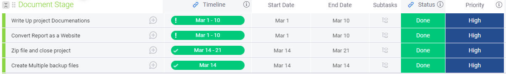
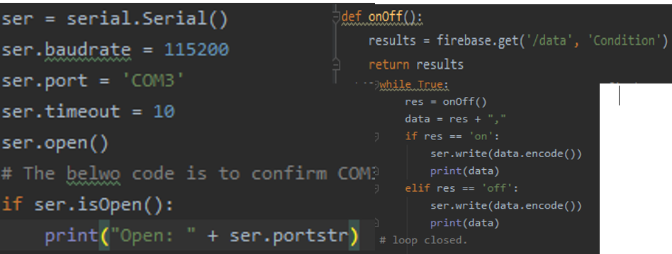
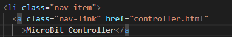
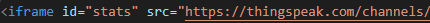

1: Introduction:
Smart homes incorporate automation systems to provide residents with increased convenience, security, energy efficiency and solutions to climate control. Networked devices connect directly/indirectly via a gateway to the internet in order to control/regulate household functions. In 2021, the smart home penetration rate worldwide was at 12.2%, the number of smart homes worldwide was >258 million and the forecast smart home market worldwide was at 99.41 bn USD [1].
| As illustrated in the graph, statistics reveal that the average electricity prices for households have been steadily increasing over the last ten years. |  |
| Global Warming/Consequences CO2 emissions worldwide increased from 6 billion to over 34 billion tonnes between 1950 & 2020 [3]. NASA statistics reveal that from 1800-2021 global surface temperatures increased significantly (-0.1 to 0.8°C). 2021 had the 6th highest temperature on record (NOAA, 2021) due to global warming [4]. In British Columbia, in 2021, 595 deaths occurred related to temperatures > 40 °C (‘heat-dome’), 70% of the dead were aged >70 years and 99% overheated inside a home/hotel [5]. In Ireland 1983-2013, 294 deaths were caused by seven heatwaves [6]. The elderly/disabled are at increased risk during heatwaves [7]. Hyperthermia, is a thermoregulatory disorder where core temperature increases > 40.5°C is a medical emergency. Early recognition of heat increases (externally/internally) is required to reduce the thermal risk [8]. | |
 [9] |
Disabilities: ‘Persons with disabilities’ are “… all persons with disabilities including those who have long-term physical, mental, intellectual or sensory impairments” [8]. The CSO (2016) reported that overall 262,818 people had difficulties with basic physical activities [9]. |
| Forecast Smart Home Market worldwidz https://www.statista.com/topics/2430/smart-homes/#dossierKeyfigures |
Plan:
Based on this research, it is proposed to develop a smart fan embedded home automation systems which will reduce the users risk of hyperthermia indoors during heatwaves.
End-Users/Stakeholders:
Persons with disabilities/Older persons/General population.
Artefacts to be develop:
| Potential Solutions: | User | Problem addressed: |
|---|---|---|
| Heating, ventilation and air condition (HVAC) Automatic temperature control | Persons with intellectual/physical disabilities at risk from temperature increases | Prevent hyperthermia (Heat)/ Hyperthermia(Cold) for persons unable to understand/respond to the risks |
| Automatic Window Open/Close | General public | Reduction of noise pollution above 70dB and air circulation |
| Smart Door Open/Close Automatically | Wheelchair users | Removes accessibility problems entering/exiting rooms/buildings |
Existing Solution:
| Company | Products/Function | User |
|---|---|---|
| The Google Nest Learning Thermostat (2022) [10] | Adjusts temperatures to optimal levels | General population |
| Lilli [11] | Web-based interface monitors behaviours | People self-limiting conditions |
| Hunter Fans [12] | Smart ceiling fan, motion sensor integrates with thermostat. | General population |
Social Implications:
Social Implications of the embedded home automation system will include increased independence for users, reduction of their risk of hyperthermia indoors during heatwaves providing reassurance and reductions in energy costs/consumption. It will contribute to The National Housing Strategy for Disabled People’s 2022-2027 [13] aim to increase the provision of accessible homes/information/technology to promote people’s participation in their communities and assist in the practical implementation of legislated guidelines from The United Nations Convention on the Rights of Persons with Disabilities (2015)/The National Positive Ageing Strategy (2015) [14,15]. Dependency on the internet, privacy interference and the expense of implementation/maintenance creating disparities in uptake are some ethical concerns. The website will make the products accessible.
Refine list and describe the objectives for the artifacts that you will develop:
| Artifacts | Objectives | Potential Technical Solutions: | Chosen Solution |
|---|---|---|---|
| Website | Interactive, Accessible Fictional automation system. Marketing of product. Monitor/control the embedded system. Capture Data. Validation Checks. Display front-end features. | Programming features: HTML Firebase databases Python JavaScript CSS bootstrap bundle min js bootstrap bundle CSS | All |
| Embedded System: - HVAC System - Remote/Internet Activated Lights | Temperature monitor/control Automated, Air circulating, Energy-efficient Time/triggered locally Sensors, Communication network. | Automated fan/temperature sensor General Purpose Operating System (GPOS) Real-Time Operating Systems (RTOS) Microprocessor Micro:Bit: Microcontroller Hardware/Software | All |
2: Design
| Artefact | Design Requirements | Programs language /Technical components |
|---|---|---|
| Website | As part of this project, we have decided to create a minimum of 7 pages. Home Product Product Detail Login Register Statistics MicoBit Controller |
Programming features HTML Firebase databases Python Customized JavaScript Customized CSS bootstrap bundle min js bootstrap bundle CSS |
OverviewThe objective of the website is to create an online presence for promoting and controlling our appliances. Description:The objective of the website is to create an online presence for promoting and controlling our appliances.Top Navigation Section:To create a top navigation to display the above pages.Home Page:The main webpage of the website and to include company Information.Products page:Information about specific products will be displayed. (up to 6 products will be displayed)Products Detail page (PDP):Include two “View Demo” buttons. Once clicked a video will be uploaded within the frame.Login page:Create assign Up button and Sign In form with password reset option.Registration page:will contain all relevant fields required for registration. Every field will have its own validating rule. - All fields must be completed.- First, last and User name must be alphabet only - Email must contain @ symbol. - Password length minimum: < 6 and less than > 12. - Once completed should be redirected to the index.html page. - For any violation there must be a popup error message. - Form not to be submitted unless the checkbox is ticked. - As soon as the form is submitted, redirect it to the homepage. Statistics page:Each graph has daily, weekly, and monthly buttons to show the corresponding statistics. To display the graphs within the webpage, create a CSV file. That CSV file will be then converted to HTML format using Python Script. However, to display the temperature live data, the ThingSpeak platform will be used. In order to show the live data, we used the ThingSpeak platform instead of the CSV file. MicroBit Controller page: On/Off buttons will be included on this page to control the lights or any output device. The live temperature sensor will be displayed using the ThingSpeak platform, a platform for IoT analytics. The value of the Firebase database will be changed when the On/Off button is clicked. |
||
Highlevel Website Design Requiremnts
|
||
| Artefact | Design | Programs language /Technical components / Material |
|---|---|---|
| Auto Fan |  |
|
Description:Description: HVAC equipment is controlled via temperature sensor to maintain the desired temperature by heating and Colling system. This module is based on the working principle of a thermistor (resistance varies with temperature change in the environment). It can sense temperature changes in its surroundings and send the data to the analog IO in the board. The Heating mode will be activated if the temperature is lower than 18. If the temperature stays between 18 and 29 degrees, the system will remain off. If the temperature stays above 30, the cooling fan will remain on. |
||
Data flow diagram: |
||
System architecture diagram |
||
| Artifact | Design | Programs language /Technical components |
| Auto Light IoT | Micro:bit Controller |
|
Description:The objective to create a On/Off button to be controlled by the website, and this will in turn On/Off the lights. IoT: bit is an expansion board based on IoT for Micro:bit. It uses ESP8266 as a WIFI expansion board and serial port to communicate with Micro: bit. 
|
||
Implementation and Testing:
Project Timeline:
A project start date and the end date were defined and the below project life cycle was used to manage the program from start to finish. .

Investigation Stage:
In the investigation phase, I aim to capture the details of each user requirement and to understand the scope of the project and how it will be achieved.

Plan stage

Design Stage
During this stage, my goal will be to translate the actual requirements into technical architect design. At this point, I will define the components, programming language, tools, and APIs.
Create Stage:
During this stage, I would be focused on writing the actual program as well as developing the website and database.

Evaluation Stage:
During the evaluation phase, I identified the following high-level task. I will test various programs and components to ensure that they work.
Document Stage:
In the documentation stage, the following tasks will be completed. The main focus is to complete the documntaion and to create a website for brief.
Problems encountered during deployment of the artefacts:
Problem 1:Hardware problem: On my Windows computer, the micro:bit was connecting as a drive called MAINTENANCE instead of MICROBIT. . I downloaded and updated the micro:bit firmware with micro:bit V2. Once, updated the micro: Bit worked perfectly |
 |
| Software Code: | Pictire |
Problem 2:COM 3 port wasn’t opning, which was required to transfer the code within the MicroBit as shown in the diagram. We also found the other software on our laoptop was ustalisng the COM 3 port. This was discovered during the debugging, once the software was disabled/ closed the connection was established with the Datbase and Microbit. |
 |
| Coding Problem: JavaScript validation rues was’t working on the Register page. | Picture |
| We have used the Plot … library. The CSV file .. However, to solve the issue | Picture |
Operation of the System:
| Auto Fan |
1. prepare our Micobit hardware 2. Coded the Microbit python 3. Downloaded the code in Microbit 4: Assemble the Microbit device with IoT sensor. 5: Temp sensor connected with the IoT device 6. Collect the room temp and send it to the server (thingspeak) for live data visualization. |
Include video .30 sec |
| Auto Light |
1: Prepare our hardware. 2: Coded the MicroBit with python 3: Downloaded the code in Microbit using the USB. 4: Assembled the MicroBit device with light. 5: We created a database within the firebase. The purpose of creating the firebase was to check the status of the devices based on the value On/Off. 6: Clicked On/Off button on the Web page, the script sends data to the Firebase. 7: Whenever the value is turned On/Off the web page updates the database. Upon turning the value On/Off, the python script on our microbit reads the data and turns the MicroBit device On/Off as per the value. 8: In order to communicate with Firebase, Python scripts were written in MicroBit. 9: Connected the micro bit with USB within COM3 port. 10: Using a web page, we can control the LED Lights remotely. (any output device ). 11: The web page updates the firebase database, while the Python script coded within the micro:bit reads the values and controls the device based on the value. (On/Off) |
Include video .30 sec |
Fundamental programming skills:
Please see below an example of programming skills used throughout the project
| Programming Skill | Examples |
|---|---|
| Functions: Function has been used to enhance the readability and to reduce duplication of a program. |  |
| Algorithms: If statements, functions, and loops are used to collect data from Firebase. |  |
| Iteration code: Use of the while loop for updating the database. |  |
| Database Table: Created firebase database. |  |
| Code Structure | Indents were created. The following software were used to programme the codes. PyCharm, Visual Studio, Makecode, Firbase, BootStrap, etc |
| Data Types: Datatypes such as Strings were used through the programming. |  |
| Comments: code is commented. |  |
Description and type of testing and User case:
Integration Tests
To verify that all which individual components that were built work together. We encountered the following issues during the testing, which were later corrected. Please see Pre and post-testing debugs and corrective actions.
| Test Case | Result (Pass/Fail) | Pre - Corrective Action screenshot/ debug | Post –Corrective action | Post Result (Pass/Fail) |
|---|---|---|---|---|
| At the top, click on links to different pages. Verify that the relevant page opens by clicking on each page. | Fail |  |
The page link was fixed after correcting the herf link. .  Also added new page.  |
Yes |
| Verify the password validation parameters in the "Register" section. It must include one uppercase, one numeric, one special character, and one lowercase character. | Pass |  |
N/A. | Pass |
| Complete the registration form and submit it. Check for the alerts and redirect messages | Fail | The web page generated the alert message however didn't redirect to the home page. | The "window.location" object used to get the current page (URL) and to redirect the browser to the index page. 
|
PASS |
System Testing and functional testing:
System attesting was carried out to ensure that the whole system fulfills the initial requirements such as turning on/off the lights through the webpage. Function testing was carried out to ensure that its function works correctly. Such API testing was carried out to make sure that graphs' were updated.
| Test Case | Result (Pass/Fail) | Pre - Corrective Action screenshot/ debug | Post Corrective action | Post Result (Pass/Fail) |
|---|---|---|---|---|
| Firebase Database testing. Check that database shows the value of On/Off once the button is clicked from the website. | Pass | Yes. The lights are turned on and the database changes its value. | N/A | Pass |
| Determine whether the Fan automatically turns On/off once the temperature reaches the defined level within the Microbit code. | Pass | Pass. | N/A | Yes |
| Check that the Graphs display the live Temperature data variation. | Fail |  | Updated the source code. The website shows the live data. | Pass |
| While clicking the buttons on the webpage, verify that the Graphs display the Monthly, Weekly, and Daily data. | Pass | Pass. No action required. | N/A | Pass |
Acceptance Testing:
Acceptance testing was to determine that all the functions worked as per user requirements.
| Test Case | Result (Pass/Fail) | Pre - Corrective Action screenshot/ debug | Post Corrective action | Post Result (Pass/Fail) |
|---|---|---|---|---|
| Check if all the functional and design specifications met the user requirements. | Pass | N/A. All worked accordingly. | N/A | Pass |
Evaluation
1. Explain the extent to which Artefact meets your design objectives.
The smart fan embedded home automation systems and website meet the following objectives:
| Artefacts | Objectives | Objectives Met/Not: | Comment |
|---|---|---|---|
| Website |
|
||
| Embedded System |
|
2. Explain how well the needs of the envisaged end user are met
The product meets the needs of an end user of a person with physical disabilities as it is automatically operated without the need for manual operations. For persons with intellectual disabilities/older persons with conditions such as dementia that effect cognitive abilities the system functions without the need to read temperatures/understand thermostat regulation but reducing their risk of hyperthermia in heatwaves. As it operates when necessary only, it is energy efficient reducing costs for users.
3. Describes with justification how well your artefact could be modified and improved
These systems can be further enhanced and linked to Alexa and other IoT based devices. The temperature sensor can also be used with aother alerting devices such as Alram/ Buzzar to alert . There is a need to develop a mobile application to control the functionalities.
(Revenue in the Smart Home market in the World 2025 | Statista, 2022)
As it currently is the system is connected to the Fan, the code can be changed to detect to maintain constant room temperatures to users preference. Alerting systems can be generated to inform users that the temperature had been exceeded beyond a set level which can be altered.
The website can be converted into a mobile app with further control/regulatory functions.
Wireless enabled wearable technology (eg Fit bit) that detect physical temperatures could be programmed to activate external environmental climate control devices. These would be beneficial for persons with high temperature to respond to that
The
wireless-enabled wearable technology, physical fitness monitors and activity trackers such as smartwatches, pedometers and monitors for heart rate, quality of sleep and stairs climbed as well as related software
References:
|
[1] https://www.statista.com/forecasts/887554/revenue-in-the-smart-home-market-in-the-world Image References used in website:[16] Smart Fan https://www.elecfreaks.com/micro-bit-smart-home-kit.html [17] Smart Window https://www.elecfreaks.com/micro-bit-smart-home-kit.html [18] Water Level Detector https://www.elecfreaks.com/micro-bit-smart-home-kit.html [19] Smart Lights https://www.elecfreaks.com/learn-en/microbitKit/smart_home_kit/smart_home_kit.html [20] Smart Door https://www.access-board.gov/files/ada/guides/entrances.pdf |
|
BIBLIOGRAPPHY:http://www.eastin.eu/en/searches/products/indexhttp://www.eastin.eu/en/searches/products/index http://www.who.int/features/factfiles/ageing/ageing_facts/en/index.html . https://assets.publishing.service.gov.uk/government/uploads/system/uploads/attachment_data/file/7604/2185850.pdf https://bigassfans.com/residential/ https://bigassfans.com/speclab/ https://electrek.co/2020/03/24/tesla-smart-home-hvac-elon-musk-considers-new-product/) https://electrek.co/2020/03/24/tesla-smart-home-hvac-elon-musk-considers-new-product/ https://emergency.unhcr.org/entry/43935/older-persons https://glitch.com/create-project https://goldenkey.ie/computer-science-for-leaving-cert/ https://icsh.ie/icsh-members/national-association-of-housing-for-visually-impaired/ https://internetofthingsagenda.techtarget.com/definition/embedded-system https://makecode.microbit.org/#editor https://mightybuildings.com/quatro https://pages.silabs.com/rs/634-SLU-379/images/The-Future-of-Smart-Home-Design.pdf https://sensibo.com/ https://smarthon-docs-en.readthedocs.io/en/latest/smartcity/chapter1.html https://thingspeak.com/channels/1666843 https://uk.pcmag.com/smart-home/133953/midea-duo-smart-inverter-portable-air-conditioner https://wiki.keyestudio.com/Ks0033_keyestudio_Analog_Temperature_Sensor https://www.accenture.com/us-en/services/ai-artificial-intelligence-index https://www.ageaction.ie/how-we-can-help/care-and-repair https://www.elecfreaks.com/iot-bit-for-micro-bit.html https://www.elecfreaks.com/micro-bit-smart-home-kit.html https://www.enableireland.ie/sites/default/files/publication/AT%20Paper%20final%20version.pd https://www.energy.gov/energysaver/fans-cooling https://www.foldhousing.ie/care-services/dementia-support/ https://www.gov.ie/en/publication/60d76-national-housing-strategy-for-disabled-people-2022-2027/). https://www.iwa.ie/national-housing-strategy-for-disabled-people/ https://www.mayoclinic.org/diseases-conditions/heat-stroke/symptoms-causes/syc-20353581 https://www.nbcnews.com/storyline/hot-cars-and-kids/hot-car-deaths-key-facts-about-safety-summer-months-n380306 https://www.ncbi.ie/ https://www.noheatstroke.org/ https://www.nytimes.com/wirecutter/blog/smart-home-devices-save-money-energy/ https://www.security.org/home-automation/ https://www.sgeducation.ie/product/elecfreaks-iotbit-for-microbit https://www.specbee.com/blogs/how-make-interactive-websites-and-why-you-need-one https://www.theguardian.com/cities/2018/aug/15/planning-regulations-overlook-heat-so-developers-build-death-traps https://www.theguardian.com/cities/2018/aug/15/planning-regulations-overlook-heat-so-developers-build-death-traps https://www.washingtonpost.com/climate-environment/2021/07/02/arizona-mobile-home-deaths/ https://www.zerocarbonhub.org/sites/default/files/resources/reports/Overheating_in_Homes-Where_to_Start_Introduction_for_Planners_Designers_and_Property_Owners.pdf internetofthingsagenda.techtarget.com/definition/smart‐home‐ or‐building [43] www.accenture.com/_acnmedia/pdf‐98/accenture‐putting‐ human‐first‐future‐home.pdf www.accenture.com/t20170303T051308__w__/us‐ en/_acnmedia/Accenture/Conversion‐ Assets/DotCom/Documents/Global/PDF/Dualpub_26/Accenture‐ The‐Race‐to‐the‐Smart‐Home.pdf www.cso.ie/en/releasesandpublications/ep/p‐ isshh/informationsocietystatistics‐ households2020/smarttechnology/ www.security.org/smart‐home/ www.youtube.com/watch?v=IC0mkHh7MaA |
Summary Word Count:
| Section | Word Count |
|---|---|
| 1. Investigation & Plan | |
| 2. Design | |
| 3. Implementation & Testing | |
| 4. Evaluation |